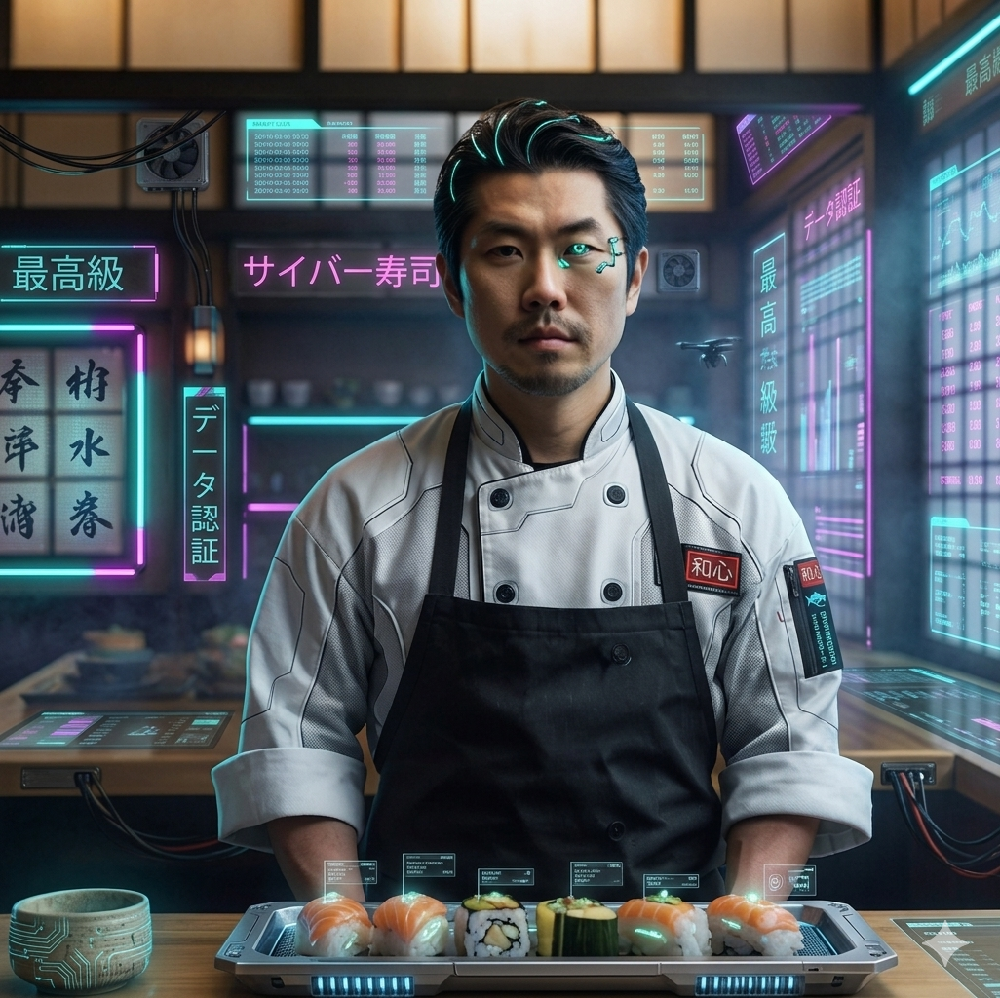

Nos spécialités
Sushis et
makis
Grillades
Cave à vin
Sushis et
makis
Grillades
Cave à vin
Originaire de Tokyo, il a grandi en apprenant les techniques ancestrales de la cuisine japonaise auprès de chefs de renom. Après avoir travaillé dans des restaurants de sushi renommés au Japon, il s’est formé en France et au Québec avant d’ouvrir son propre établissement pour fusionner ses influences asiatiques et occidentales.

Découvrez les coulisses de notre cuisine et de nos créations
Ouverture le 1er juin
(450) 438-3439
info@hiroshiresto.com
31 Rue Morin, Saint-Adèle, QC J8B 2P6